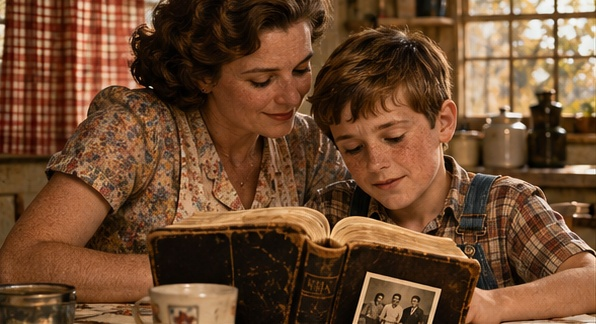
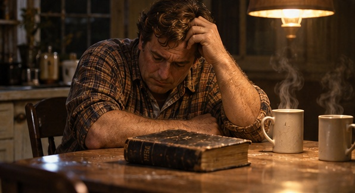
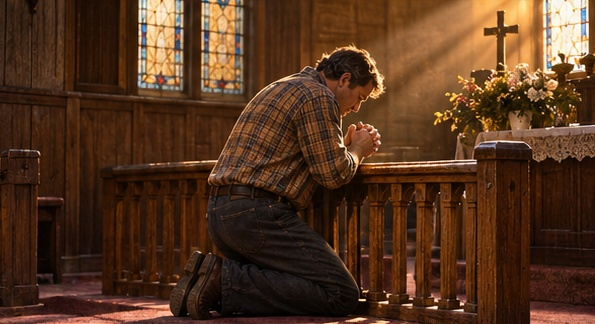
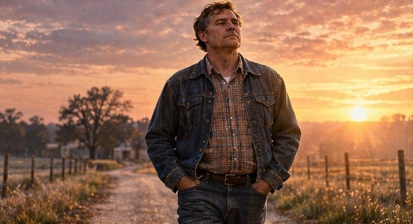
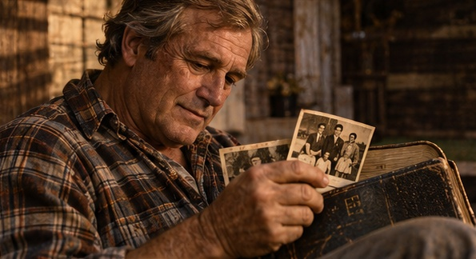
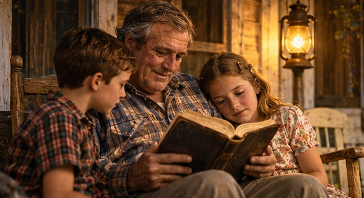

A lifetime of faith, forgiveness and finding our way home.
Hear a preview of ‘Mama’s Bible’
Eight chapters of a fictional life, inspired by vintage Memphis gospel. Created by Aaron TNT Albertson in collaboration with ChatGPT and Muse, with music generated using Suno.
Listen to the album
Streaming links will be available when the album is released.
The illustrated booklet
Read the full story with all eight illustrations, or take it with you.
Choose a chapter to read its story, or read them all in order.
Chapter 1 of 8
Chapter 01 · The seeds of faith
Mama’s Bible

Sunday morning begins in a small kitchen, with biscuits on the table and sunlight through the curtains. A mother opens her well-worn Bible beside her little boy. He cannot yet understand how much those quiet moments will mean. Years later, the book and the photograph tucked inside will become a reminder of a love that never stopped reaching for him.
Mama’s Bible had a broken spine / Pages worn by the hands of time
Chapter 02 · The wandering years
A Long Way from Sunday
The boy grows into a young man eager to make his own way. The church, the familiar hymns and his mother’s prayers become distant memories. He chases things that promise fulfillment, only to discover how easily they slip away. Somewhere beneath the noise of his new life, the sound of Sunday remains.
I’m a long way from Sunday / Lord, but Sunday ain’t that far away.
Chapter 03 · The breaking point
Nobody Saw Me Cry

Years pass. One night he sits alone at a kitchen table, with two cups and only himself for company. He retrieves Mama’s Bible from a forgotten box. A photograph slips from its pages, bringing back the tenderness of childhood. In the quiet, he finally admits how much he hurts and begins to turn toward home.
Nobody saw me cry / Nobody but You
Chapter 04 · Surrender
I Laid It Down
Hear a preview of ‘I Laid It Down’

He has spent years trying to carry everything himself. Now, in the quiet of a church, he kneels and gives his burdens to Jesus. There is no need to pretend that his past never happened. Grace meets him where he is, and the weight he has carried for so long begins to lift. His next prayer is simply to learn how to live again.
What a heavy load I carried / What a sweet relief
Chapter 05 · A new beginning
Learning How to Walk Again

Monday morning arrives with the same responsibilities and the same imperfect world. But something inside him has changed. He begins to apologize, reach out and practice the kindness he learned as a child. Faith becomes a series of small choices rather than a single dramatic moment. Each step is a new beginning.
One little step, one little prayer / One more morning knowing You’re there
Chapter 06 · Gratitude
The Hands That Held Me

With the passing years comes a different understanding of his life. He remembers his mother’s hands, his father catching him when he fell, and the people who stood beside him when he could not stand alone. What once seemed like luck now looks like mercy. He gives thanks for the love that carried him through.
For the mercy I mistook for luck / On the roads I walked alone
Chapter 07 · Legacy
Leave a Little Light Behind

The little boy is now a grandfather. On the porch, with two grandchildren beside him, he opens the same Bible his mother once read to him. He knows he cannot walk every road for them, but he can leave them something to guide their steps. The porch light becomes a promise: love can continue shining long after we are gone.
Plant a seed of love today / For a child who’ll find their way
Chapter 08 · Homecoming
When Heaven Calls My Name
The journey draws to a peaceful close. The old Bible rests on the porch, and morning light spreads across the fields. The man who once wandered so far from Sunday now looks toward a home beyond sorrow and shame. His story ends in the hope that the mercy which held him throughout his life will hold him forever.
Oh, what a glorious morning / When Heaven calls my name.
Bonus recording
Thank You for Your Mercy — a bonus recording from the Memphis & Mercy sessions.
Credits
Artist
Aaron TNT Albertson
Creative collaboration
Aaron, GPT and Muse
Music
Generated using Suno
Story & illustrations
Memphis & Mercy — the illustrated digital album companion, created by Aaron TNT Albertson in collaboration with ChatGPT and Muse